Oblique planar cut
plane_plane_oblique
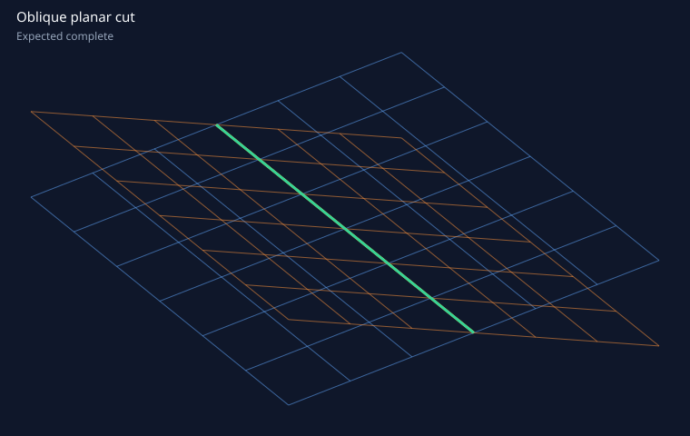
Geometry and accuracy checks passed.
- Expected
- complete
- Output
line· degree 1 · 1 span · 4e-07 mm- Purpose
- Baseline transverse line between two bounded planar NURBS patches.
Fabrik · Geometry bench
plane_plane_oblique

Geometry and accuracy checks passed.
line · degree 1 · 1 span · 4e-07 mmsweep_profile_plane
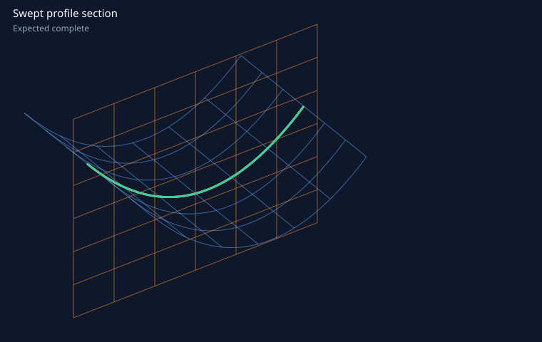
Geometry and accuracy checks passed.
trace-polyline · degree 1 · 1745 spans · 3.57e-07 mmfreeform_bicubic_transverse
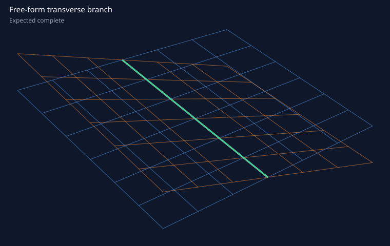
Geometry and accuracy checks passed.
line · degree 1 · 1 span · 6.66e-16 mmtwo_close_freeform_branches
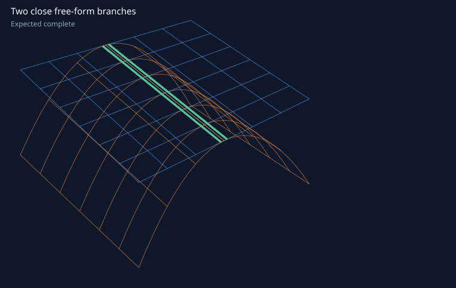
Geometry and accuracy checks passed.
line · degree 1 · 1 span · 8.26e-12 mmline · degree 1 · 1 span · 8.26e-12 mmcylinder_plane_axial
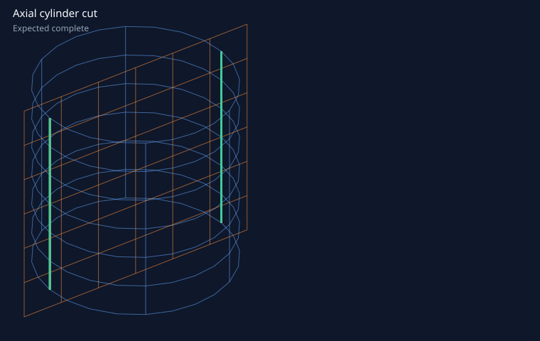
Geometry and accuracy checks passed.
line · degree 1 · 1 span · 7.3e-16 mmline · degree 1 · 1 span · 4.58e-16 mmcylinder_plane_cross
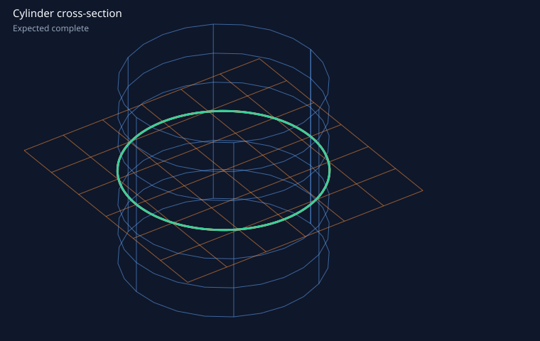
Geometry and accuracy checks passed.
circle · degree 2 · 4 spans · 2.65e-07 mm · radius 1 mm · recognizedsphere_plane_section
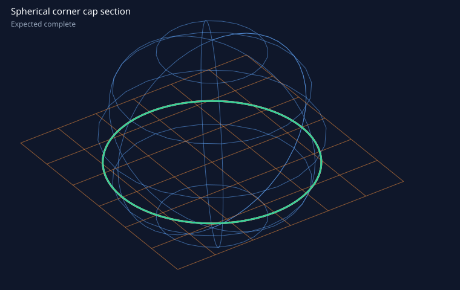
Geometry and accuracy checks passed.
circle · degree 2 · 4 spans · 2.28e-07 mm · radius 0.953939 mm · recognizedflat_short_segment_bounded_by_b
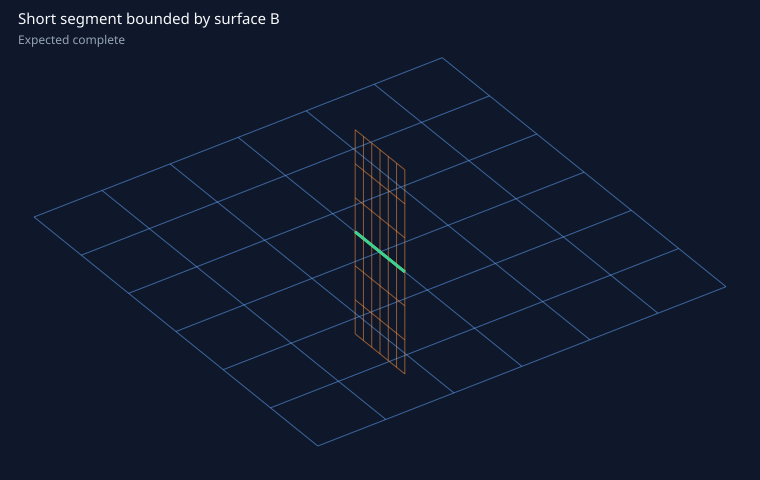
Geometry and accuracy checks passed.
line · degree 1 · 1 span · 3.61e-16 mmmicroscopic_cylinder_section
Geometry and accuracy checks passed.
circle · degree 2 · 4 spans · 1.95e-08 mm · radius 0.001 mm · recognizedmetre_scale_cylinder_section
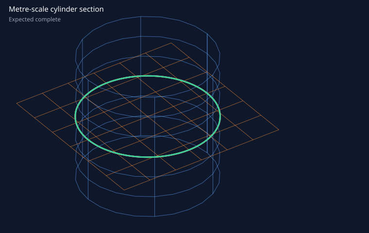
Geometry and accuracy checks passed.
circle · degree 2 · 4 spans · 1.53e-05 mm · radius 1000 mm · recognizedplane_plane_parallel
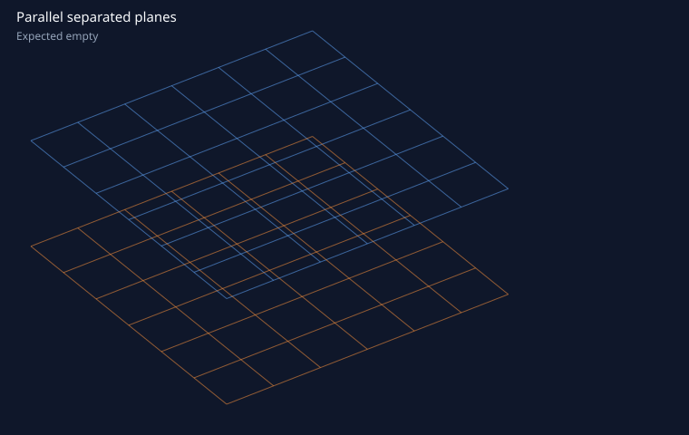
Correct empty relation.
parallel_planes_gap_within_tolerance
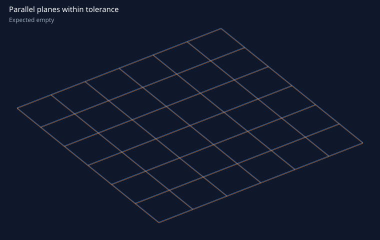
Correct empty relation.
parallel_planes_gap_outside_tolerance
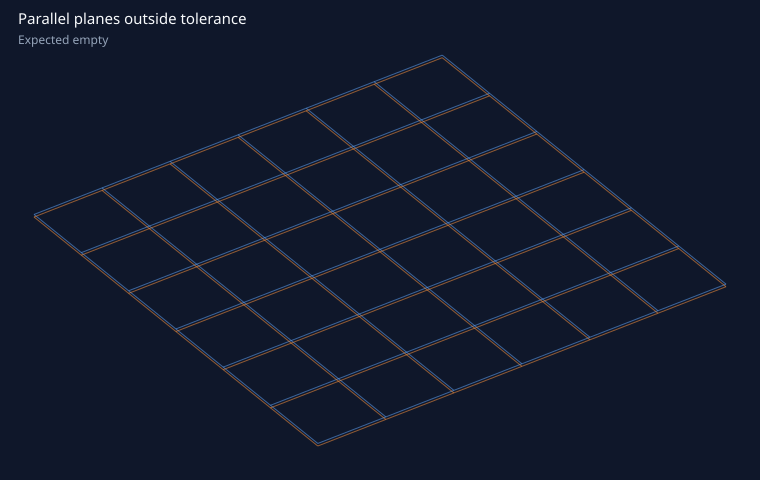
Correct empty relation.
freeform_bowl_gap_within_tolerance
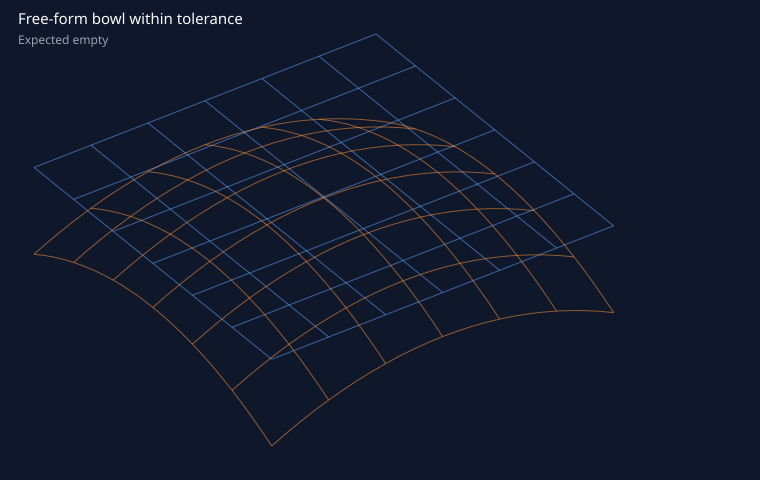
Correct empty relation.
freeform_bowl_gap_outside_tolerance
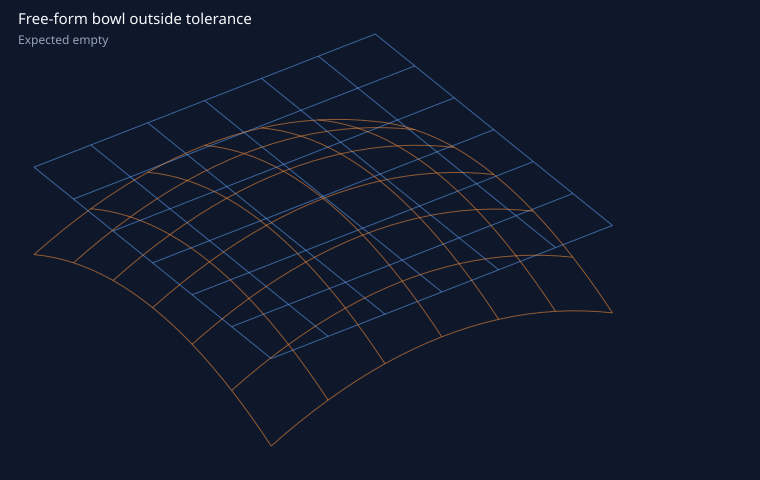
Correct empty relation.
coaxial_cylinders_disjoint
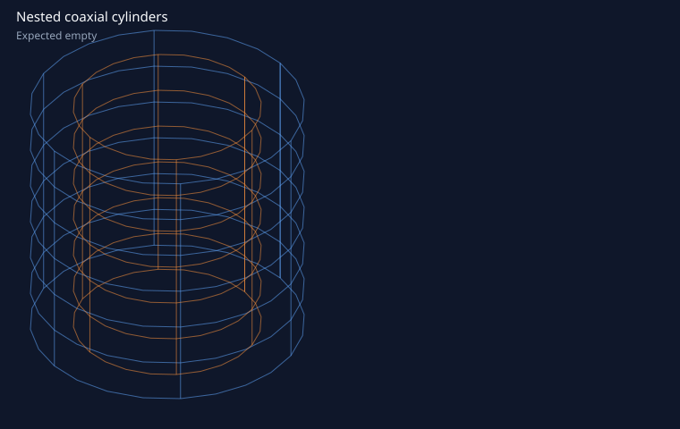
Correct empty relation.
flat_infinite_planes_intersect_patches_disjoint
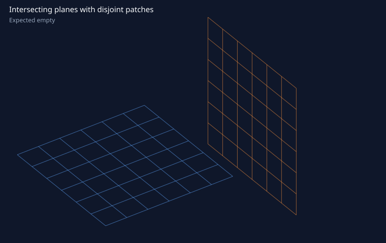
Correct empty relation.
sphere_plane_tangent_point
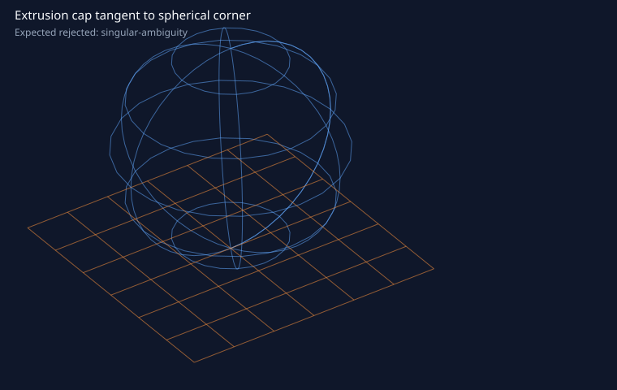
Structured singular-ambiguity rejection.
singular-ambiguityplane_plane_coincident
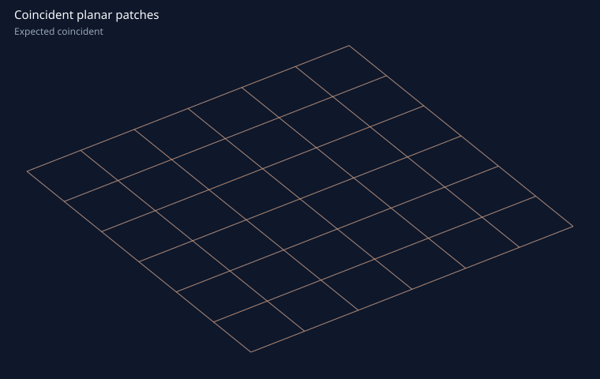
Structured coincident-ambiguity rejection.
coincident-ambiguityinvalid_weight
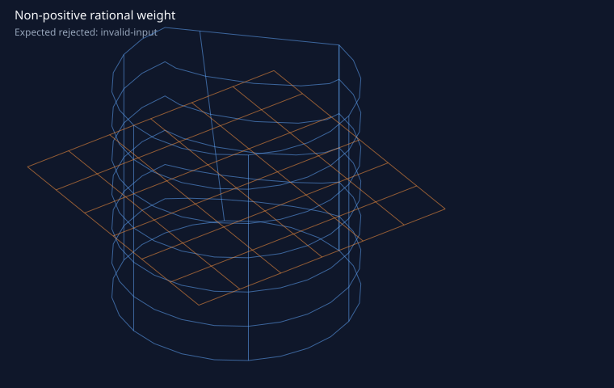
Structured invalid-input rejection.
invalid-inputhigh_degree_five_transverse_branches
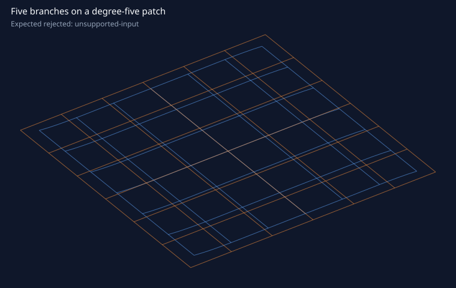
Structured unsupported-input rejection.
unsupported-inputaccuracy_budget_exhausted
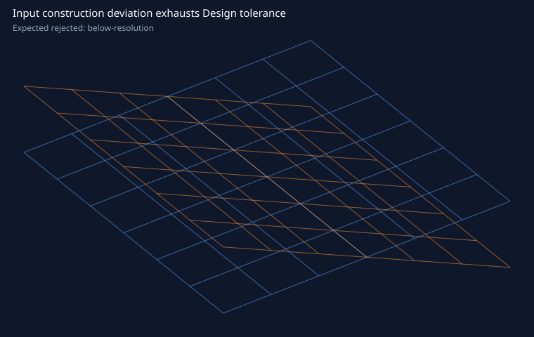
Structured below-resolution rejection.
below-resolutioncoordinate_floor_exhausts_accuracy_budget
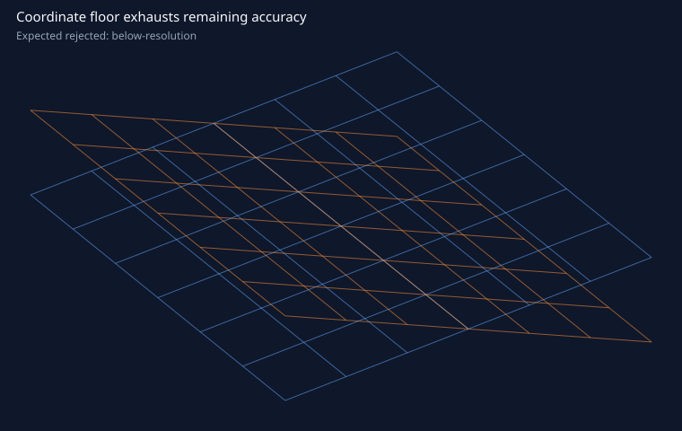
Structured below-resolution rejection.
below-resolutionquarter_cylinder_plane_arc
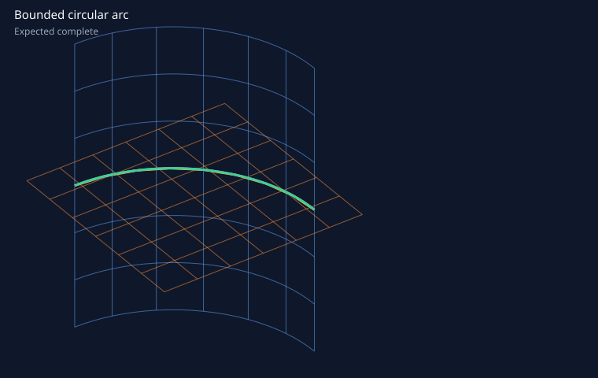
Geometry and accuracy checks passed.
circular-arc · degree 2 · 1 span · 1.94e-07 mm · radius 1 mm · sweep 90° · recognized